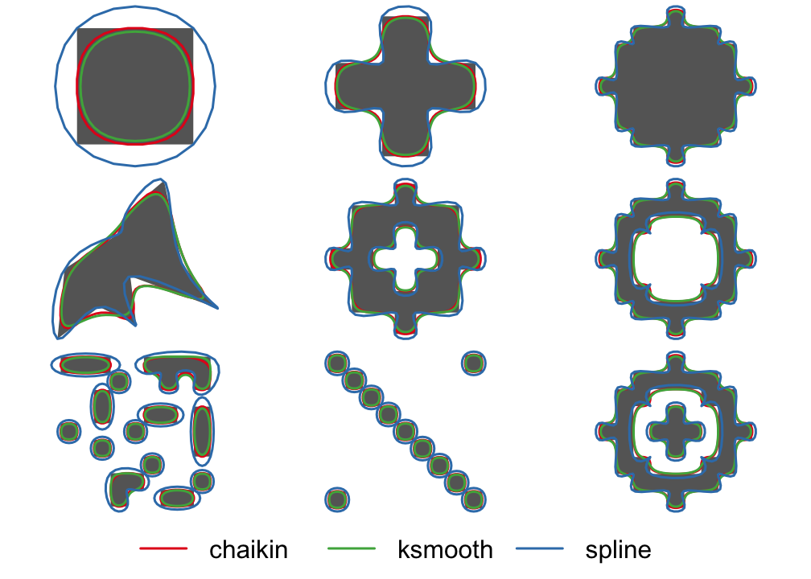
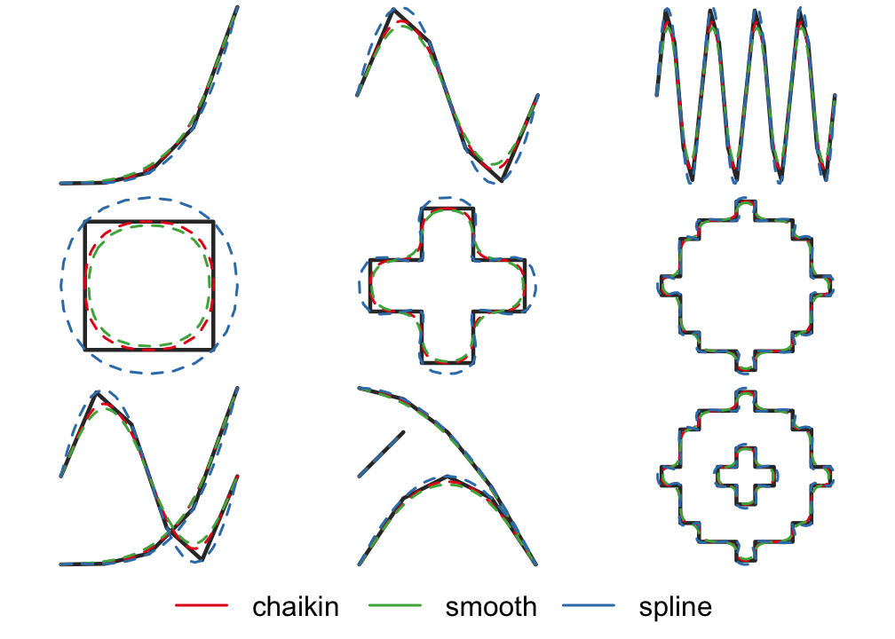

smoothr offers a variety of tools for smoothing and tidying spatial features (i.e. polygons and lines) to make them more aesthetically pleasing, especially when converting raster data to vector format. This package offers support for both sp and sf spatial objects. The following smoothing methods are available:
- Chaikin’s corner cutting algorithm: smoothing using Chaikin’s corner cutting algorithm, which iteratively replaces every point by two new points: one 1/4 of the way to the next point and one 1/4 of the way to the previous point. This method applies a moderate amount of smoothing of sharp corners without extensive generalization.
-
Kernel smoothing: smoothing using Gaussian kernel regression via the
ksmooth()function. This approach first densifies the feature (i.e. adds more vertices) then applies the kernel smoothing. Kernel smoothing simultaneously smooths and generalizes curves, and can be tuned to produce extensively smoothed curves. -
Spline interpolation: smoothing using spline interpolation via the
spline()function. This method interpolates between existing vertices and should be used when the resulting smoothed feature must pass through the vertices of the input feature.
In addition to these smoothing functions, smoothr offers functions for filling polygon holes and dropping line and polygon fragments based on a size threshold, as well as densification (i.e. adding additional vertices along curves).
When using smoothr, a couple important warnings should be considered: 1. Smoothing can give the false perception of higher precision than actually exists in the data, so users should be cautious when applying these algorithms. 2. The smoothing algorithms used do not preserve topological boundaries between features, therefore this package is not suitable for smoothing isolines (e.g. elevation contours) or administrative boundaries (e.g. country borders)
Installation
# install from cran with
install.packages("smoothr")
# or install the development version from github with
# install.packages("devtools")
devtools::install_github("mstrimas/smoothr")Usage
Two example feature sets are included in this package. jagged_polygons contains 9 polygons with sharp edges for smoothing, some have holes and some are multipart polygons. We can smooth these using the different methods available and plot a comparison:
library(sf)
library(smoothr)
par(mar = c(0, 0, 0, 0), oma = c(4, 0, 0, 0), mfrow = c(3, 3))
p_smooth_chaikin <- smooth(jagged_polygons, method = "chaikin")
p_smooth_ksmooth <- smooth(jagged_polygons, method = "ksmooth")
p_smooth_spline <- smooth(jagged_polygons, method = "spline")
for (i in 1:nrow(jagged_polygons)) {
plot(st_geometry(p_smooth_spline[i, ]), col = NA, border = NA)
plot(st_geometry(jagged_polygons[i, ]), col = "grey40", border = NA, add = TRUE)
plot(st_geometry(p_smooth_chaikin[i, ]), col = NA, border = "#E41A1C", lwd = 2, add = TRUE)
plot(st_geometry(p_smooth_ksmooth[i, ]), col = NA, border = "#4DAF4A", lwd = 2, add = TRUE)
plot(st_geometry(p_smooth_spline[i, ]), col = NA, border = "#377EB8", lwd = 2, add = TRUE)
}
par(fig = c(0, 1, 0, 1), oma = c(0, 0, 0, 0), new = TRUE)
plot(0, 0, type = "n", bty = "n", xaxt = "n", yaxt = "n", axes = FALSE)
legend("bottom", legend = c("chaikin", "ksmooth", "spline"),
col = c("#E41A1C", "#4DAF4A", "#377EB8"),
lwd = 2, cex = 2, box.lwd = 0, inset = 0, horiz = TRUE)
jagged_lines contains 9 lines with sharp edges for smoothing, some are closed loops requiring special treatment of the endpoints and some are multipart lines. For variety, let’s smooth these using spline interpolation:
par(mar = c(0, 0, 0, 0), oma = c(4, 0, 0, 0), mfrow = c(3, 3))
l_smooth_chaikin <- smooth(jagged_lines, method = "chaikin")
l_smooth_ksmooth <- smooth(jagged_lines, method = "ksmooth")
l_smooth_spline <- smooth(jagged_lines, method = "spline")
for (i in 1:nrow(jagged_lines)) {
plot(st_geometry(l_smooth_spline[i, ]), col = NA)
plot(st_geometry(jagged_lines[i, ]), col = "grey20", lwd = 3, add = TRUE)
plot(st_geometry(l_smooth_chaikin[i, ]), col = "#E41A1C", lwd = 2, lty = 2, add = TRUE)
plot(st_geometry(l_smooth_ksmooth[i, ]), col = "#4DAF4A", lwd = 2, lty = 2, add = TRUE)
plot(st_geometry(l_smooth_spline[i, ]), col = "#377EB8", lwd = 2, lty = 2, add = TRUE)
}
par(fig = c(0, 1, 0, 1), oma = c(0, 0, 0, 0), new = TRUE)
plot(0, 0, type = "n", bty = "n", xaxt = "n", yaxt = "n", axes = FALSE)
legend("bottom", legend = c("chaikin", "smooth", "spline"),
col = c("#E41A1C", "#4DAF4A", "#377EB8"),
lwd = 2, cex = 2, box.lwd = 0, inset = 0, horiz = TRUE)
Other goodies
smoothr contains a handful of other tools to help clean up spatial features and make them look cleaner and more aesthetically pleasing.
-
densify()(and it’s aliassmooth(x, method = "densify")) densifies lines and polygons, adding additional vertices along line segments. -
drop_crumbs()removes small lines or polygons based on a length or area threshold. -
fill_holes()fills (i.e. removes) holes from polygons when they are below a given area threshold.
See the documentation for these functions for full details.
Code of Conduct
Please note that this project is released with a Contributor Code of Conduct. By participating in this project you agree to abide by its terms.
Contributing
To contribute to the development of this project please refer to the guidelines.